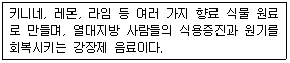
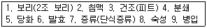
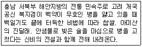
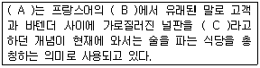
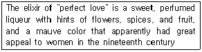
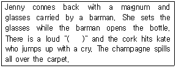
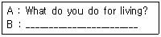
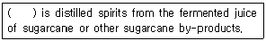
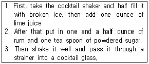

조주기능사 (2013-04-14 기출문제)
1과목: 주류학개론
1. 잭 다니엘(Jack Daniel)과 버번위스키(Bourbon Whiskey)의 차이점은?
- 옥수수 사용 여부
- 단풍나무 숯을 이용한 여과 과정의 유무
- 내부를 불로 그을린 오크통에서 숙성시키는지의 여부
- 미국에서 생산되는지의 여부
(정답률: 60%)

2. 하이볼 글라스에 위스키 (40도) 1온스와 맥주 (4도) 7온스를 혼합하면 알코올 도수는?
- 약 6.5도
- 약 7.5도
- 약 8.5도
- 약 9.5도
(정답률: 61%)
3. 다음에서 설명하고 있는 것은?

- Cola
- Soda Water
- Ginger Ale
- Tonic Water
(정답률: 75%)
4. 다음 주류 중 주재료로 곡식(Grain)을 사용할 수 없는 것은?
- Whisky
- Gin
- Rum
- Vodka
(정답률: 64%)
5. 다음 중 아이리쉬 위스키(Irish Whisky)는?
- John Jameson
- Old Forester
- Old Parr
- Imperial
(정답률: 73%)
6. 스카치위스키를 기주로 하여 만들어진 리큐르는?
- 샤트루즈
- 드람부이
- 꼬앙뜨로
- 베네딕틴
(정답률: 59%)
7. 커피에 대한 설명으로 가장 거리가 먼 것은?
- 아라비카종의 원산지는 에티오피아이다.
- 초기에는 약용으로 사용되기도 했다.
- 발효와 숙성과정을 거쳐 만들어진다.
- 카페인이 중추신경을 자극하여 피로감을 없애준다.
(정답률: 79%)
8. 맥주(beer) 양조용 보리로 가장 거리가 먼 것은?
- 껍질이 얇고, 담황색을 하고 윤택이 있는 것
- 알맹이가 고르고 95% 이상의 발아율이 있는 것
- 수분 함유량은 10% 내외로 잘 건조된 것
- 단백질이 많은 것
(정답률: 74%)
9. 술과 체이서(Chaser)의 연결이 어울리지 않는 것은?
- 위스키 - 광천수
- 진 - 토닉워터
- 보드카 - 시드르
- 럼 - 오렌지 주스
(정답률: 49%)
10. 다음 중 호크 와인(Hock Wine)이란?
- 독일 라인산 화이트 와인
- 프랑스 버건디산 화이트 와인
- 스페인 호크하임엘산 레드 와인
- 이탈리아 피에몬테산 레드 와인
(정답률: 69%)
11. 버번위스키 (Bourbon Whiskey)는 Corn 재료를 약 몇 % 이상 사용하는가?
- Corn 0.1%
- Corn 12%
- Corn 20%
- Corn 51%
(정답률: 71%)
12. Ginger Ale에 대한 설명 중 틀린 것은?
- 생강의 향을 함유한 소다수이다.
- 알코올 성분이 포함된 영양음료이다.
- 식욕증진이나 소화제로 효과가 있다.
- Gin이나 Brandy와 조주하여 마시기도 한다.
(정답률: 78%)
13. 스카치위스키(Scotch Whisky)의 유명상표와 거리가 먼 것은?
- 발렌타인(Ballantine's)
- 커티 샥(Cutty Sark)
- 올드 파(Old Parr)
- 크라운 로얄(Crown Royal)
(정답률: 58%)
14. 포도 품종의 그린 수확(Green Harvest)에 대한 설명으로 옳은 것은?
- 수확량을 제한하기 위한 수확
- 청포도 품종 수확
- 완숙한 최고의 포도 수확
- 포도원의 잡초 제거
(정답률: 63%)
15. Tequia에 대한 설명으로 틀린 것은?
- Agave tequiliana 종으로 만든다.
- Tequila는 멕시코 전 지역에서 생산된다.
- Reposado는 1년 이하 숙성시킨 것이다.
- Anejo는 1년 이상 숙성시킨 것이다.
(정답률: 71%)
16. 다음 중 증류주에 속하는 것은?
- Beer
- Sweet Vermouth
- Dry Sherry
- Cognac
(정답률: 67%)
17. Malt Whisky 제조순서를 올바르게 나열한 것은?

- 1-2-3-4-5-6-7-8-9
- 1-3-2-4-5-6-7-8-9
- 1-3-2-4-6-5-7-8-9
- 1-2-3-4-6-5-7-8-9
(정답률: 53%)
18. 시대별 전통주의 연결로 틀린 것은?
- 한산소곡주 - 백제시대
- 두견주 - 고려시대
- 칠선주 - 신라시대
- 백세주 - 조선시대
(정답률: 40%)
19. 다음 중 싱글 몰트 위스키로 옳은 것은?
- Johnnie Walker
- Ballantine
- Glenfiddich
- Bell's Special
(정답률: 53%)
20. 음료에 함유된 성분이 잘못 연결된 것은?
- Tonic Water - Quinine(Kinine)
- Kahlua - Chocolate
- Ginger Ale - Ginger Flavor
- Collins Mixer - Lemon Juice
(정답률: 74%)
21. 풀케(pulque)를 증류해서 만든 술은?
- Rum
- Vodka
- Tequila
- Aquavit
(정답률: 67%)
22. 다음에서 설명되는 약용주는?

- 두견주
- 송순주
- 문배주
- 백세주
(정답률: 57%)
23. 다음 품목 중 청량음료에 속하는 것은?
- 탄산수(Sparkling Water)
- 생맥주(Draft Beer)
- 톰 칼린스(Tom Collins)
- 진 휘즈(Gin Fizz)
(정답률: 84%)
24. 음료류와 주류에 대한 설명으로 틀린 것은?
- 맥주에서는 메탄올이 전혀 검출 되어서는 안 된다.
- 탄산음료는 탄산가스 압이 0.5kg/㎠ 인 것을 말한다.
- 탁주는 전분질 원료와 국을 주원료로 하여 술덧을 혼탁하게 제성한 것을 말한다.
- 과일, 채소류 음료에는 보존료로 안식향산을 사용할 수 있다.
(정답률: 62%)
25. Red Wine의 품종이 아닌 것은?
- Malbec
- Cabernet Saubignon
- Riesling
- Cabernet franc
(정답률: 67%)
26. 진(Gin)의 설명으로 틀린 것은?
- 진의 원산지는 네덜란드다.
- 진은 프란시크루스 실비우스에 의해 만들어졌다.
- 진의 원료는 과일에다 jniper berry를 혼합하여 만들었다.
- 소나무 향이 나는 것이 특징이다.
(정답률: 47%)
27. 다음 중 각국 와인의 설명이 잘못된 것은?
- 모든 와인생산 국가는 의무적으로 와인의 등급을 표기해야 한다.
- 프랑스는 와인의 Terroir를 강조한다.
- 스페인과 포르투갈에서는 강화와인도 생산한다.
- 독일은 기후의 영향으로 White wine의 생산량이 Red wine보다 많다.
(정답률: 59%)
28. 다음 리큐르(Liqueur)중 그 용도가 다른 하나는?
- 드람뷔이(Drambuie)
- 갈리아노(Gllaiano)
- 시나(Cynar)
- 꼬앙트루(Cointreau)
(정답률: 55%)
29. 다음 Whiskyd의 설명 중 틀린 것은?
- 어원은 aqua vitae가 변한 말로 생명의 물이란 뜻이다.
- 등급은 V.O, V.S.O.P, X.O등으로 나누어 진다.
- Canadian Whisky에는 Canadian Club, Seagram's V.O, Crown Royal 등이 있다.
- 증류 방법은 Pot Still과 Patent Sill이다.
(정답률: 60%)
30. 다음 중 셰리를 숙성하기에 가장 적합한 곳은?
- 솔레라(Solera)
- 보데가(Bodega)
- 꺄브(Cave)
- 프로(Flor)
(정답률: 46%)
2과목: 주장관리개론
31. 조주를 하는 목적과 거리가 가장 먼 것은?
- 술과 술을 섞어서 두 가지 향의 배합으로 색다른 맛을 얻을 수 있다.
- 술과 소프트드링크 혼합으로 좀 더 부드럽게 마실 수 있다.
- 술과 기타 부재료를 가미하여 좀 더 독특한 맛과 향을 창출해 낼 수 있다.
- 원가를 줄여서 이익을 극대화 할 수 있다.
(정답률: 82%)
32. 다음 중 휘젓기(Stirring) 기법으로 만드는 칵테일이 아닌 것은?
- Manhattan
- Martini
- Gibson
- Gimlet
(정답률: 52%)
33. 바(Bar)에서 사용하는 Wine Decanter의 용도는?
- 테이블용 얼음 용기
- 포도주를 제공하는 유리병
- 펀치를 만들 때 사용하는 화채 그릇
- 포도주병 하나를 눕혀 놓을 수 있는 바구니
(정답률: 66%)
34. 주장(Bar)을 의미하는 것이 아닌 것은?
- 주류를 중심으로 한 음료 판매가 가능한 일정시설을 갖추어 판매하는 공간
- 고객과 바텐더 사이에 놓인 널판을 의미
- 주문과 서브가 이루어지는 고객들의 이용 장소
- 조리 가능한 시설을 갖추어 음료와 식사를 제공하는 장소
(정답률: 70%)
35. 위생적인 주류 취급방법 중 틀린 것은?
- 먼지가 많은 양주는 깨끗이 닦아 Setting한다.
- 백포도주의 적정냉각온도는 실온이다.
- 사용한 주류는 항상 뚜껑을 닫아 둔다.
- 창고에 보관할 때는 Bin Card를 작성한다.
(정답률: 81%)
36. 바텐더가 지켜야 할 규칙사항으로 가장 적합한 것은?
- 고객이 바 카운터에 있으면 앉아서 대기해야 한다.
- 고객이 권하는 술은 고마움을 표시하고 받아 마신다.
- 매출을 위해서 고객에게 고가의 술을 강요한다.
- 근무 중에는 금주와 금연을 원칙으로 한다.
(정답률: 73%)
37. 표준 레시피(Standard Recipes)를 설정하는 목적에 대한 설명 중 틀린 것은?
- 품질과 맛의 계속적인 유지
- 특정인에 대한 의존도를 높임
- 표준 조주법 이용으로 노무비 절감에 기여
- 원가계산을 위한 기초 제공
(정답률: 67%)
38. Onion 장식을 하는 칵테일은?
- Margarita
- Martini
- Rob roy
- Gibson
(정답률: 69%)
39. Strainer의 설명으로 가장 적합한 것은?
- Mixing Glass와 함께 Stir기법에 사용한다.
- 재료를 저을 때 사용한다.
- 혼합하기 힘든 재료를 섞을 때 사용한다.
- 재료의 용량을 측정할 때 사용한다.
(정답률: 68%)
40. 칵테일의 기본 5대 요소와 거리가 가장 먼 것은?
- Decoration(장식)
- Method(방법)
- Glass(잔)
- Flavor(향)
(정답률: 63%)
41. 다음 중 High ball glass를 사용하는 칵테일은?
- 마가리타(Margarita)
- 키르 로열(Kir Royal)
- 씨 브리즈(Sea breeze)
- 블루 하와이(Blue Hawaii)
(정답률: 51%)
42. ( A ), ( B ), ( C )에 들어갈 말을 순서대로 나열한 것은?

- Flair, Bariere, Bar
- Bar, Bariere, Bar
- Bar, Bariere, Bartender
- Flair, Bariere, Bartender
(정답률: 69%)
43. 칵테일 주조 시 각종 주류와 부재료를 재는 표준용량 계량기는?
- Hand shaker
- Mixing Glass
- Squeezer
- Jigger
(정답률: 77%)
44. 연회용 메뉴 계획 시 에피타이저 코스 주류로 알맞은 것은?
- cordials
- port wine
- dry sherry
- cream sherry
(정답률: 70%)
45. 바(bar)에서 하는 일과 가장 거리가 먼 것은?
- Store에서 음료를 수령한다.
- Appetizer를 만든다.
- Bar Stool을 정리한다.
- 음료 Cost 관리를 한다.
(정답률: 61%)
46. 주장의 캡틴 (Bar Captain)에 대한 설명으로 틀린 것은?
- 영업을 지휘 · 통제한다.
- 서비스 준비사항과 구성인원을 점검한다.
- 지배인을 보좌하고 업장 내의 관리업무를 수행한다.
- 고객으로부터 직접 주문을 받고 서비스 등을 지시한다.
(정답률: 36%)
47. 주장관리에서 핵심적인 원가의 3요소는?
- 재료비, 인건비, 주장경비
- 세금, 봉사료, 인건비
- 인건비, 주세, 재료비
- 재료비, 세금, 주장경비
(정답률: 75%)
48. 식사 중 여러 가지 와인을 서빙시 적합한 방법이 아닌 것은?
- 화이트 와인은 레드 와인보다 먼저 서비스한다.
- 드라이 와인을 스위트 와인보다 먼저 서비스한다.
- 마시기 가벼운 와인을 맛이 중후한 와인보다 먼저 서비스한다.
- 숙성기간이 오래된 와인을 숙성기간이 짧은 와인보다 먼저 서비스한다.
(정답률: 71%)
49. 주장의 영업 허가가 되는 근거 법률은?
- 외식업법
- 음식업법
- 식품위생법
- 주세법
(정답률: 56%)
50. 글라스 세척 시 알맞은 세제와 세척순서로 짝지어진 것은?
- 산성세제 - 더운물 - 찬물
- 중성세제 - 찬물 - 더운물
- 산성세제 - 찬물 - 더운물
- 중성세제 - 더운물 - 찬물
(정답률: 79%)
3과목: 고객서비스영어
51. Which is the liquor made by the rind of grape in Italy?
- Marc
- Grappa
- Ouzo
- Pisco
(정답률: 74%)
52. 다음에서 설명하는 혼성주로 옳은 것은?

- triple sec
- Peter heering
- parfait Amour
- Southern comfort
(정답률: 50%)
53. 다음 ( )안에 알맞은 단어와 아래의 상황 후 Jenny가 Kate에게 할 말의 연결로 가장 적합한 것은?

- peep - Good luck to you
- ouch - I am sorry to hear that.
- tut - How awful!
- pop - I am very sorry. I do hope you are not hurt
(정답률: 67%)
54. Table wine에 대한 설명으로 틀린 것은?
- It is a wine term which is used in two different meanings in different countries : to signify a wine style and as a quality level with on wine classification.
- In the United Stated, it is primarily used as a designation of a wine style, and refers to "ordinary wine", which is neither fortified nor sparkling.
- In the EU wine regulations, it is used for the higher of two overall quality.
- It is fairly cheap wine that is drunk with meals.
(정답률: 45%)
55. 다음 B에 가장 적합한 대답은?

- I'm writing a letter to my mother.
- I can't decide.
- I work for a bank.
- Yes, thank you.
(정답률: 65%)
56. 다음 ( )안에 알맞은 것은?

- whisky
- vodka
- gin
- rum
(정답률: 53%)
57. Which is the best term used for the preparing of daily products?
- Bar Purchaser
- Par Stock
- Inventory
- Order Slip
(정답률: 51%)
58. 다음 ( )안에 가장 적합한 것은?
- some
- many
- to
- only
(정답률: 76%)
59. 다음은 무엇을 만들기 위한 과정인가?

- Bacardi
- Cuba Libre
- Blue Hawaiian
- Daiquiri
(정답률: 46%)
60. Which is correc to serve wine?
- When pouring, make sure to touch the bottle to the glass.
- Before the host has acknowledged and approved his selection, open the bottle.
- All white, roses, and sparkling wines are chilled. Red wine is served at room temperature.
- The bottle of wine doesn't need to be presented to the host for verifying the bottle he or she ordered.
(정답률: 47%)